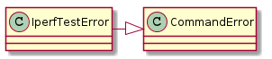
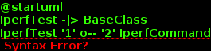

A module to hold an iperf test tool.
The IperfTestError is raised if there was an iperf-related error (as opposed to, say, a connection-related error).

The IperfTest runs a single test, taking care of both sides of the connection (client and server).
| IperfTest([sender_command, ...]) | The Iperf Test runs a single iperf test. |

The main interface with the IperfTest is its call-method:
test = IperfTest(sender_command, receiver_command)
test(sender, receiver, filename)
The process:
Set the target address in the iperf command to the receiver (server):
self.sender_command.parameters.client = receiver.addressKill the existing iperf processes:
self.kill(sender.connection) self.kill(receiver.connection)Start the iperf-server and sleep to let it get set-up:
self.receiver_command.start(receiver, filename) self.sleep()Allow other processes to block the iperf client-start
- if self.wait_events is not None:
time_out = self.sender_command.max_time if not self.wait_events.wait(time_out):
raise IperfTestError(“Timed out waiting for event.”)
Run the client
self.sender_command.run(sender, filename)
Check if the server is still running and kill it if it is:
if self.receiver_command.running: self.kill(receiver.connection)